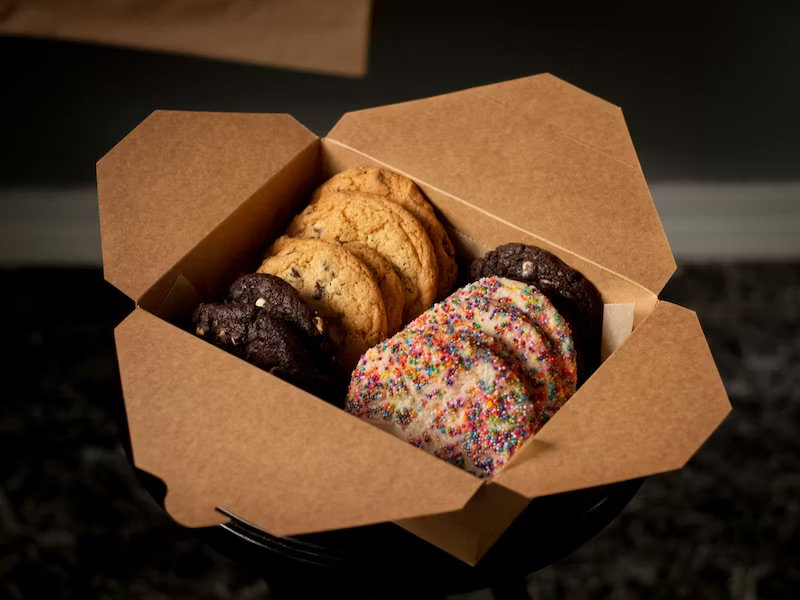
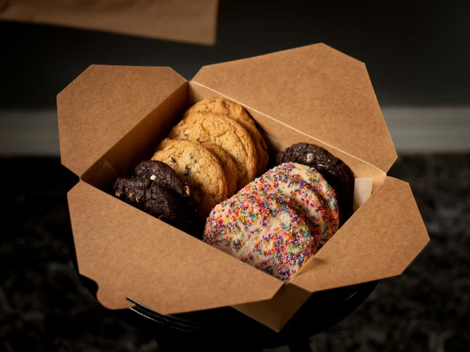
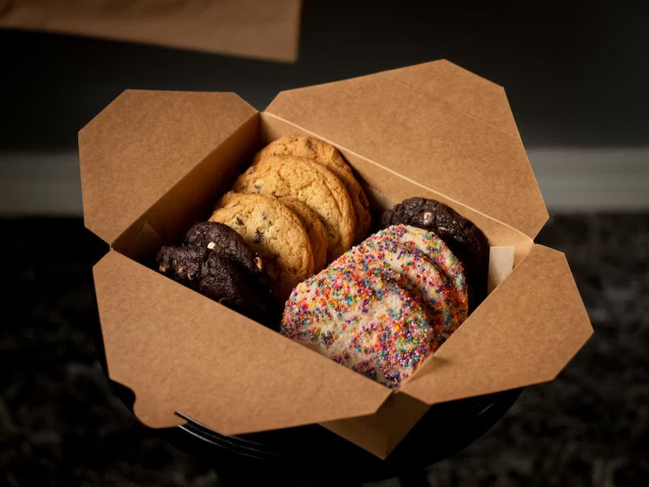
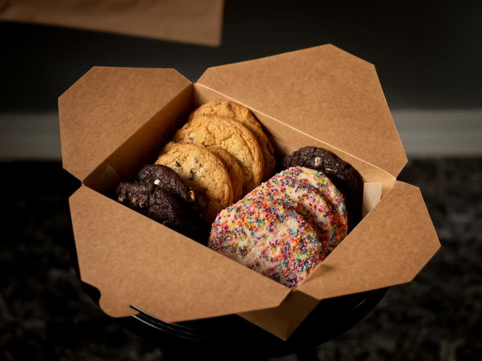

Indulge in the warm embrace of homemade pain au chocolat, where flaky, golden layers of buttery pastry cradle rich, melty dark chocolate. As you break into the delicate crust, a delightful aroma fills the air, hinting at the decadence within. Each bite offers a perfect balance of crispness and tenderness, while the luscious chocolate oozes just enough to make your taste buds sing. Whether enjoyed fresh from the oven or slightly cooled with a dusting of powdered sugar, this classic French treat transforms any moment into a gourmet experience. Perfect with a cup of coffee, homemade pain au chocolat is more than just a pastry; it’s a little slice of heaven.
Experience the bliss of a freshly baked croissant, where each bite reveals a symphony of textures and flavors. The outer layer boasts a beautifully golden, crisp shell that gives way to soft, airy layers within. As you pull apart the warm pastry, you’ll be greeted by a rich, buttery aroma that tantalizes the senses. The delicate, flaky layers are a testament to the artisan skill that goes into each creation, offering a perfect balance of indulgence and lightness. Whether enjoyed plain or filled with velvety chocolate, luscious almond paste, or a hint of ham and cheese, a homemade croissant elevates any breakfast or afternoon treat into a moment of pure delight. Savour it with a steaming cup of coffee.
Step into the delightful world of freshly baked in-store cookies, where the scent of warm dough and melting chocolate fills the air, beckoning you closer. Each cookie is a masterpiece, with a golden-brown crust that breaks apart to reveal a soft, gooey center studded with generous chunks of rich chocolate. As you take your first bite, the harmonious blend of sweet and salty dances across your taste buds, the decadent chocolate melting in your mouth. The slight crunch of the edges perfectly contrasts the tender interior, making every bite a moment of bliss. Whether enjoyed on the go or savored in a cozy corner of the shop, these cookies are the ultimate treat. A warm, comforting indulgence that brings a smile to your face with every delicious mouthful.